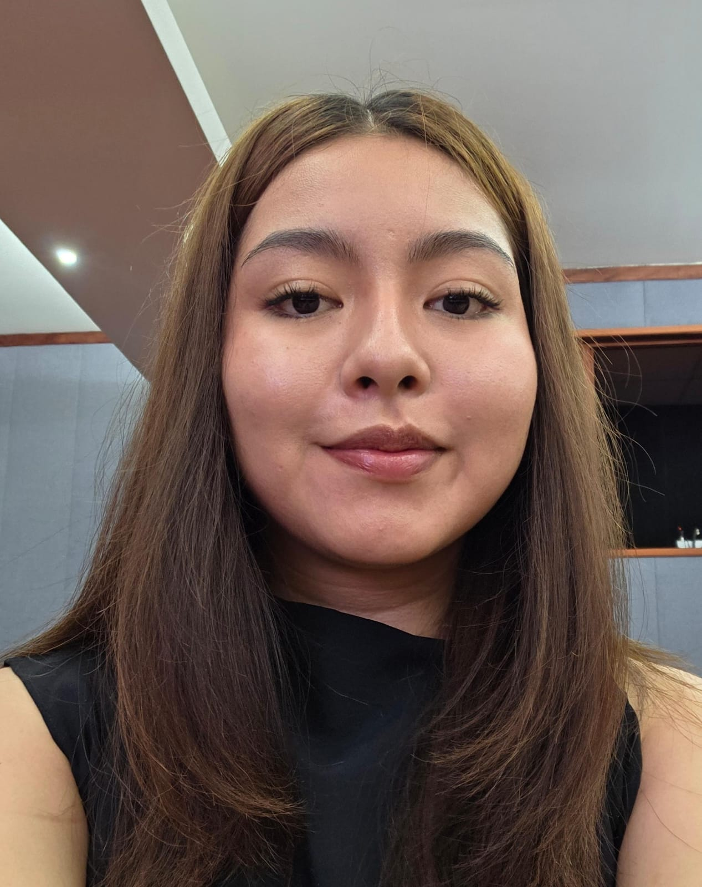
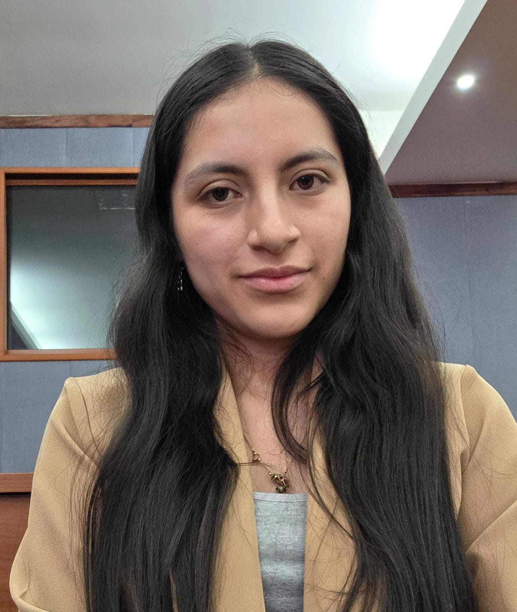

TerraÑan XR

Descripción del proyecto
TerraÑan XR es un kit de macetas inspirado en el Qhapaq Ñan que integra el mundo físico y digital mediante tecnologías inmersivas. A través de realidad aumentada, los usuarios pueden visualizar la maceta en su propio espacio, observar cómo lucen las plantas y explorar el producto antes de adquirirlo. La experiencia se complementa con un entorno de realidad virtual guiado que transmite el valor cultural andino y fortalece la conexión emocional con el objeto. El kit incluye una maceta impresa en 3D y un packaging con código QR que enlaza todo el ecosistema, transformando una maceta en una experiencia cultural interactiva.
Foto del proyecto

Experiencia AR
Explora la visualización de macetas con AR Detection, Model Targets y Multi Targets.
Abrir experiencia AREquipo de trabajo

AR · Modelado 3D · Impresión
Desarrolló la experiencia de realidad aumentada utilizando AR Detection, Model Targets y Multi Targets. Además, participó en el modelado de la maceta en Blender y en la validación del proceso de impresión 3D.

VR · Narrativa · Gestión empresarial
Implementó la experiencia de realidad virtual con locomoción, interacción y guía narrativa. También contribuyó al desarrollo del modelo de negocio, propuesta de valor y estrategia del proyecto.